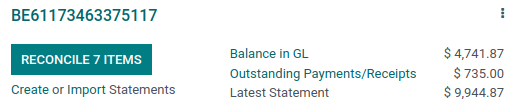
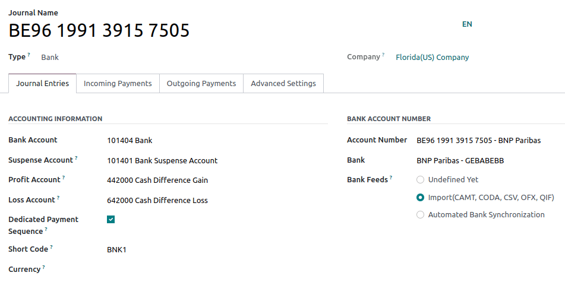
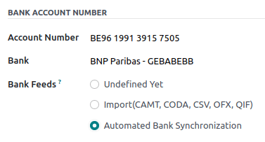

Bank and cash accounts¶
You can manage as many bank or cash accounts as needed on your database. Configuring them well allows you to have all your banking data up-to-date and ready for reconciliation with your journal entries.
In Odoo Accounting, each bank account has a dedicated journal set to post all entries in a dedicated account. Both the journal and the account are automatically created and configured whenever you add a bank account.
Note
Cash journals and accounts must be configured manually.
Bank journals are displayed by default on the Accounting Dashboard in the form of cards which include action buttons.
Manage your bank and cash accounts¶
Connect your bank for automatic synchronization¶
To connect your bank account to your database, go to , select your bank in the list, click on Connect, and follow the instructions.
See also
Create a bank account¶
If your banking institution is not available in Odoo, or if you don’t want to connect your bank account to your database, you can configure your bank account manually.
To manually add a bank account, go to , click on Create it (at the bottom right), and fill out the form.
Note
Odoo automatically detects the bank account type (e.g., IBAN) and enables some features accordingly.
A default bank journal is available and can be used to configure your bank account by going to . Open it and edit the different fields to match your bank account information.
Create a cash journal¶
To create a new cash journal, go to , click on Create and select Cash in the Type field.
For more information on the accounting information fields, read the Configuration section of this page.
Note
A default cash journal is available and can be used straight away. You can review it by going to .
Edit an existing bank or cash journal¶
To edit an existing bank journal, go to and select the journal you want to modify.
Configuration¶
You can edit the accounting information and bank account number according to your needs.
See also
Suspense account¶
Bank statement transactions are posted on the Suspense Account until the final reconciliation allows finding the right account.
Profit and loss accounts¶
The Profit Account is used to register a profit when the ending balance of a cash register differs from what the system computes, while the Loss Account is used to register a loss when the ending balance of a cash register differs from what the system computes.
Currency¶
You can edit the currency used to enter the statements.
See also
Account number¶
If you need to edit your bank account details, click on the external link arrow next to your Account Number. On the new page, click on the external link arrow next to your Bank and update your bank information accordingly. These details are used when registering payments.
Bank feeds¶
Bank Feeds defines how the bank statements are registered. Three options are available:
Undefined yet, which should be selected when you don’t know yet if you will synchronize your bank account with your database or not.
Import (CAMT, CODA, CSV, OFX, QIF), which should be selected if you want to import your bank statement using a different format.
Automated Bank Synchronization, which should be selected if your bank is synchronized with your database.
See also
Outstanding accounts¶
By default, payments are registered through transitory accounts named outstanding accounts, before being recorded in your bank account.
An outstanding payments account is where outgoing payments are posted until they are linked with a withdrawal from your bank statement.
An outstanding receipts account is where incoming payments are posted until they are linked with a deposit from your bank statement.
These accounts should be of type Current Assets.
Note
The movement from an outstanding account to a bank account is done automatically when you reconcile the bank account with a bank statement.
Default accounts configuration¶
The outstanding accounts are defined by default. If necessary, you can update them by going to and update your Outstanding Receipts Account and Outstanding Payments Account.
Bank and cash journals configuration¶
You can also set specific outstanding accounts for any journal with the type Bank or Cash.
From your Accounting Dashboard, click on the menu selection ⋮ of the journal you want to configure, and click on Configuration, then open the Incoming/Outgoing Payments tab. To display the outstanding accounts column, click on the toggle button and check the Outstanding Receipts/Payments accounts, then update the account.

Note
If you do not specify an outstanding payments account or an outstanding receipts account for a specific journal, Odoo uses the default outstanding accounts.
If your main bank account is added as an outstanding receipts account or outstanding payments account, when a payment is registered, the invoice or bill’s status is directly set to Paid.